Русские
названия шахматных фигур. Часть 2.
Пешьц
Множество версий
происхождения термина "пешка" излагает И. Линдер (14 –
с. 36), включая версии В. Даля и Д. Саргина. В целом же можно
согласиться с позицией известного шахматного историка И. Линдера в
этом вопросе. Он пишет: "Уже первое знакомство с источниками
показывает, что характерной чертой в военном деле и в быту древних
славян является противопоставление пешего и конного".
Суздальская и Лаврентьевская летописи гласят: "… Хто
хощет пешь, а хто хощет на конех", "… Володимирко же
раставлял бяше дружину свою на бродех, инде пеши, а инде конникы".
Далее, привлекая дополнительные цитаты И. Срезневского, И. Линдер
делает вывод: "Отсюда можно заключить, что термину "пешка"
предшествовал тот же по смыслу, но более ранний по форме - "пешьци".
В былинах встречается такое выражение: "Играть в пешецки, во
шахматы" (14 – с. 37).
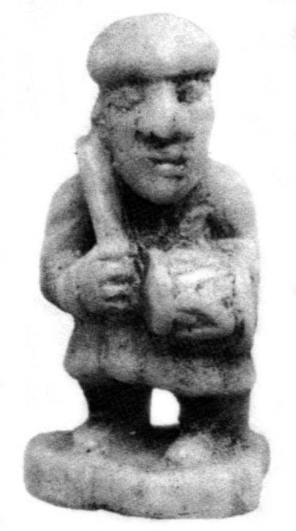
Пешка. Волковысск,
XII в.
По В. В. Виноградову (5 - с.464) в
древнерусском языке для обозначения пехотинцев употреблялись термины
"пешьцъ" (пешьци - пешее войско) и реже - "пешеходьць".
Например, в Псковской 1 летописи (1323 г.): "Немци стоятъ на
Завеличьи, и оставивше пешьцевъ за полем, а Остафеи князь, с
коневники поехавъ, удари на нихъ".
Другие
источники дают следующее.
Пеший
- 1. пешая рать, пешая сила, пеший строй - пешее войско. "…
А единой колеснице служат сто тысящ конное рати, а сто тысящ пешия
рати". (Истрин В. М. Сказание об Индейском
царстве. - Древности. Труды Славянской комиссии Московского
археологического общества, т. 1, 1895, с. 71 - 73, список 15-го
века). "… И того пешего строю солдатъ и стрельцов 5221
чел." (Материалы для истории колонизации и быта степной окраины
Московского государства (Харьковской и отчасти Курской и Воронежской
губерний) в 16 – 18 столетиях, собранные в разных архивах и
редактированные Д. И. Багалеем, Харьков, 1886),
2.
тот, кто ходит пешком,
3.
безлошадный (24 - М., 1989, вып. 15, с. 41).
Пшьцъ
- пеший воин. "… Бяше же их
триста и двадцать тысяч пшьцъ" (Сл. Меф. Пат. П. отреч. 2, 230 -
15 в.). "И бысть сеча зла…Изяславу же стоящю в пешцих
(вар. 15 в.: пешьцехъ)" - (Лаврентьевская летопись, вып. 1- 3,
Полное собрание русских летописей, т. 1, Изд.2, Л., 1926 - 1928
(воспроизведено: М., 1962), список 1377 г.
Пехота
- м. пешее войско,
инфатерия - противопоставлена коннице.
Пешка
- рядовая, простая шашка, шахматочная пехота (9 - т. 3, с. 573).
Ратник
- см. В. М. Истрин. Сказание об Индейском
царстве. - Древности. Труды Славянской комиссии Московского арх.
общ., т. 1, 1895 г., с. 71 - 73. список 15 в.
Таким
образом, обоснование реконструкции древнерусских названий шахматных
фигур, соответствующих строю древнерусской дружины, завершено. Нельзя
не удержаться от ремарки, вызванной её очевидными логикой и
семантикой. С сожалением следует признать, что в современной
шахматной "дружине", кроме героической русской пехоты,
воевать за Русь некому. Действительно, во главе войска стоит король
польских кровей, рядом с ним пророк с Востока в непонятном одеянии,
вокруг - стадо животных: слонов и коней, а на флангах плывут посуху
две пустых лодки, которые неизвестным визажистом превращены в
крепостные башни. Подобного рода семантические нестыковки
противоречат здравому смыслу, издавна присущему русскому народу,
которому также была свойственна здоровая воинственность.
Показательна
в этом плане история происхождения названий шахматных фигур у такого
не воинственного народа, как эскимосы. Фигуры короля и ферзя
осмыслены в образе супружеской пары, кони заменены миниатюрными
лодками, ладьи - снежными хижинами, пешки - тюленями.
Охотники-эскимосы, видимо, даже не предполагали, что якобы более
цивилизованные народы не в состоянии прожить без войны ни одного дня.
Русский
средневековый набор 16-го века
Этот
набор отражает процесс стихийной адаптации шахмат на историческом
пространстве России. При определении названия главной шахматной
фигуры предпочтение было отдано византийскому слову «царь»,
к тому времени уже утвердившемуся в качестве официального титула
российского монарха. Второй термин «ферзь»
был без перевода заимствован с востока, как распространенное среди
многих народов Центральной Азии, Персии, Арабского халифата,
Закавказья, Северного Кавказа, Нижнего Дона и Поволжья представление
о второй по значению шахматной фигуре. Но абсолютно непонятная
волшебная птица Рух, существующая в персидском наборе шахмат, уже
никак не могла остаться на шахматной доске. Вместо нее появилось
чисто русское изобретение – «лодья».
Названия двух следующих фигур (слона
и коня) были просто
переведены на русский язык. А более древнее название самой слабой
фигуры (пшьцъ), повидимому, приобрело более благозвучную форму:
«пешец».
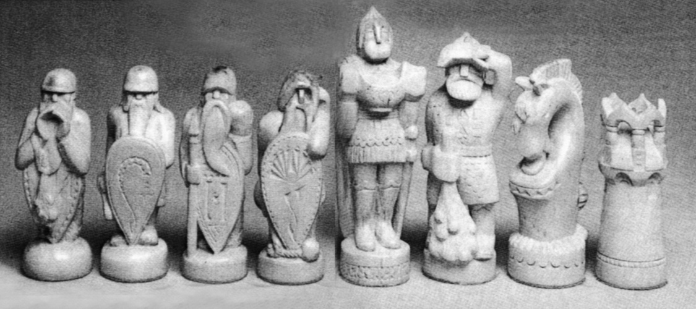
Шахматы
«Перед битвой». Белые фигуры. Собственность автора
В.
Ласунского. Москва, 1976 г. Дерево, 11,5 –
16,5 см.
Слева
4 пешки, то есть пеших воина. Справа – король (а точнее -
князь), слон (то есть витязь), конь (вместо всадника) и башня (вежа)
вместо ладьи.
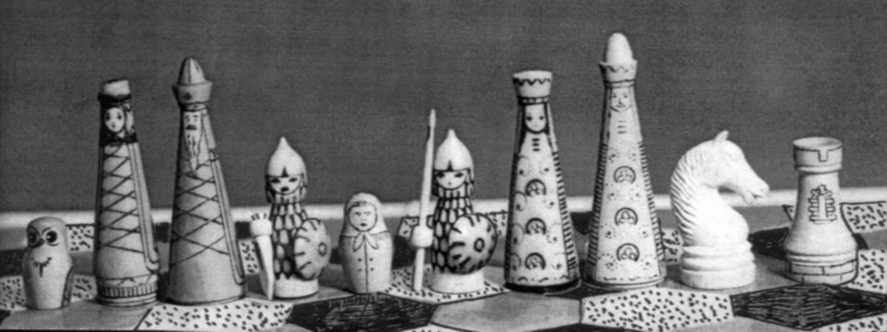
Русские
шахматы В. Трубицына, 1972 г. (Эскизный
проект для гексагональной доски. Первая наивная попытка переосмыслить
названия русских фигур в русской традиции).
Слева
- 3 чёрных фигуры: пешка (сова), сударыня и сударь. В комплекте
белых фигур 2 слона представлены богатырями. Автор резьбы не
известен.
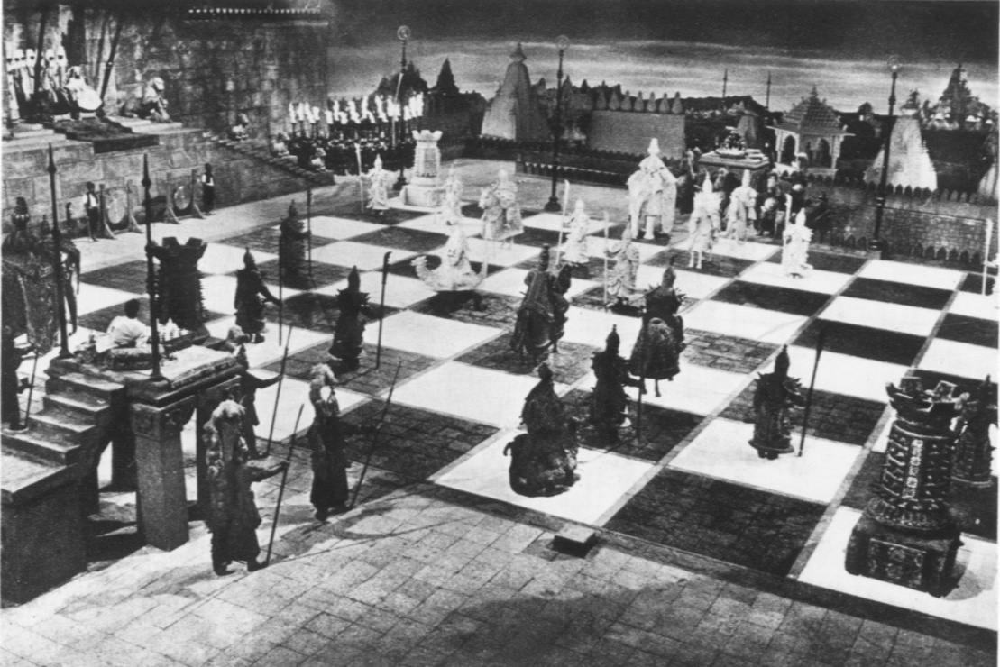
Живые
шахматы. Сцена из незаконченного
франко-югославского фильма
«Марко
Поло», 1962 г.(Ежи Гижицки. С шахматами через века и страны.
–Варшава, 1964, с. 180).
Получившийся
конгломерат шахматных фигур вовсе не соответствует строю русской
воинской дружины, прежде всего, из-за присутствия ферзя и слона.
Парадокс состоит в том, что именно этот, на наш взгляд, во всех
отношениях неудачный набор почти без изменений лёг в основу
современных названий фигур. “Царь”
был переименован в “короля”, “пшьци” стали
“пешками”, а смешение языков и эпох стало невообразимым:
современный набор в виде отголосков включает в себя элементы
индийского, персидского, польского и русского средневекового языков.
Польский
набор
Названия
шахматных фигур также заимствованы из цитированной выше работы И.
Линдера. Этот набор вполне адаптирован к своей национальной культуре.
Ладья в нем имеет название, совпадающее с древнерусской
реконструкцией, что восходит к общим славянским корням языков. Скорее
всего, именно под влиянием польского набора произошла трансформация
русской шахматной фигуры «царя» в европейского «короля».
Официальный автор переименования, сильнейший шахматист, крупный
государственный чиновник и один из первых серьезных популяризаторов
шахмат А. Петров
последние годы своей жизни провел в Польше, которая в те времена
находилась под протекторатом России, что, собственно, и могло
подвести его к подобной шахматной новации.
Русский
разговорный набор
В
последней трети прошлого тысячелетия заметно активизировалось
взаимопроникновение шахматных культур России и стран Европы. В
обиходе появляются новые названия шахматных фигур, которые становятся
общеупотребительными наравне со средневековыми русскими названиями.
Например, появились такие названия как «король» и
«королева», образовавшие пару фигур на западноевропейский
манер. У болгар был заимствован «офицер», то есть более
понятный термин для обозначения военачальника вместо экзотического
слона. Следует также упомянуть, что авторы первых основательных
российских книг о шахматах И. Бутримов и А. Петров все шахматные
фигуры первой горизонтали называли «офицерами». Странная
«ладья» в виде крепостной башни все чаще (даже в
словарях) стала называться на европейский манер «турой».
Стихийная эволюция названий фигур продолжалась в сторону нормы
речевой практики, осознаваемой шахматными игроками. Получившиеся
названия до сих пор широко используются любителями шахматной игры.
Между прочим, стихия языка вовсе не
нуждается в логическом обосновании. Например, многим привычен термин
"пешка", однако никто не задумывается: почему "пешка",
по смыслу игры пехотинец, в русском языке имеет женский род? Что за
странные пешие амазонки составляют половину нашего шахматного войска?
Древнейшее название "пешьц" было куда более логичным!
Показательно звучат названия шахматных
фигур в книге И. Бутримова
(1821 г.): "Царь или Король…Ферзь или Королева…
Две Ладьи, называемые также Башнями". Здесь И. Бутримов точно
отразил мощное влияние западноевропейской шахматной культуры на
российскую евроазиатскую традицию.
Русский
современный набор
Названия данного набора, по многим
параметрам не оптимальные в свете проведенного выше рассмотрения, не
нуждаются в пояснениях, так как официально закреплены в современном
русском языке и повсеместно используются в шахматной литературе.
Популярность шахмат в России огромна, что обеспечивает
распространенность названий этого набора среди всех любителей шахмат,
обращающихся к специальной шахматной литературе.
Часть
2. Фоносемантический аспект
Наборы названий шахматных фигур, относящиеся к различным языкам и
историческим периодам, были представлены в транскрибированном
(звукобуквенном) звучании русского языка, чтобы проанализировать их
восприятие современными носителями языка. Авторы не могут
претендовать на знание и оценку восприятия, существовавшего сотни лет
назад - тем более, у носителей других языков. Фоносемантический
анализ проводился на основе оценивания структурной неординарности
названий в формализме частотной информативности (см. Приложение).
Результаты расчетов сведены в табл. 1, в которой каждое название
снабжено ударением, что необходимо в частотной модели. Частотные
информативности указаны под названиями фигур, также приведены средние
частотные информативности (f), дисперсии
(z) наборов и их индивидуальные
мотивировочные факторы (М).
Табл.1.
Частотные характеристики наборов названий.
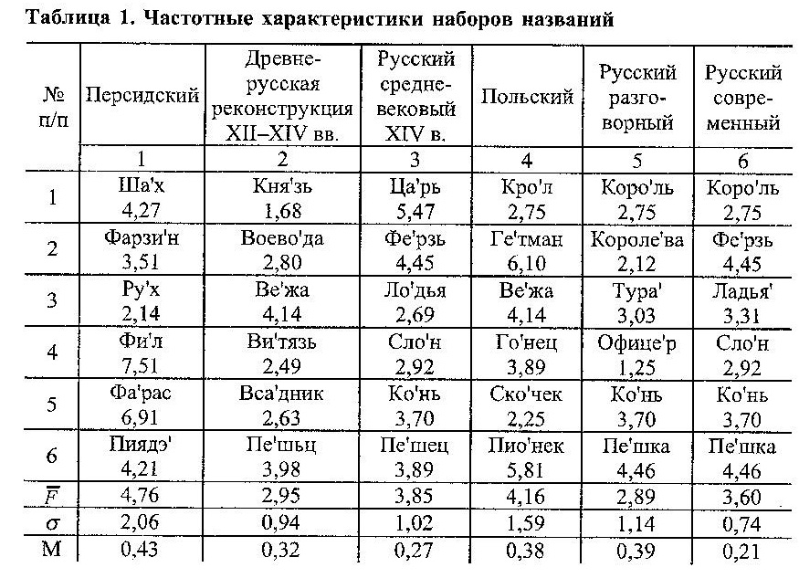
Структурная
неординарность наборов
По среднему
значению частотной информативности ближе всего к норме (2,69)
оказались реконструкция (2) и русский разговорный набор (5). Другие
наборы сдвинуты в область большей неординарности, причем персидский
набор (1) выходит за границы области нормальной дисперсии, что
напрямую соотносится с его иноязычной природой. Повышенную
фонетическую выразительность наборов (3), (4) и (6) следует отнести к
субъективной значимости игры для игроков в шахматы, которые
спроецировали свое отношение на выбор фонетически неординарных
названий фигур. Король, основная игровая фигура, наиболее
выразительно представлен в персидском (1) и русском средневековом (3)
наборах.
Близость к норме
реконструкции (2) и русского разговорного (4) наборов, по-видимому,
следует искать в секундарной номинации шахматных фигур через речевую
практику игроков: произведенное ими лексическое смещение смысла слов,
существовавших на момент выбора названий, в сторону обозначения
шахматных фигур оказалось интуитивно привязанным к звуковым формам
наборов в целом. Близость к норме объясняет бытующую
распространенность русского разговорного набора.
При сравнении
современного набора (6) с разговорным (5) видно, что вместо «слона»
(2,92) использован «офицер» (1,25), вместо «ферзя»
(4,45) – «королева» (2,12). Переход от большей
частотной информативности к меньшей можно было бы расценить как явно
выраженную тенденцию к снижению выразительности языковых форм в
разговорной речи, вместе с тем, в контексте полного набора названий
именно такой переход необходим для соответствия языковой норме и
компенсации завышенной частотной информативности других названий
набора. Современный набор названий уходит от разговорного в сторону
большей средней частотной информативности названий фигур. Это
проявление обратной тенденции к повышению яркости и экспрессивности
звуковых образов названий, к смещению их звуковой формы в область
неординарности, даже в ущерб норме, что делает современный набор
более привлекательным для официальных целей.
Индивидуальная
мотивированность наборов.
Звукосмысловые
соответствия
По дисперсии
звуковых форм названий внутри набора самыми выразительными (в плане
взаимного отличия образов названий) являются персидский (1), польский
(4) и русский разговорный (5) наборы. Это характеристика
индивидуальной частотной мотивированности, проявляющей себя в виде
отличий структурных неординарностей звуковых форм набора от некоторой
усредненной характеристики, описывающей набор в целом. Промежуточное
положение по индивидуальной мотивированности занимают реконструкция
(2) и русский средневековый (3) наборы. Русский современный набор (5)
не обладает высокой мотивированностью, что можно расценивать как
нивелировку звуковых отличий в названиях фигур, вызванную уже
отмеченным выше стремлением придать каждому отдельному названию
максимально выразительную форму.
Одной из
важнейших фоносемантических характеристик лексико-семантических групп
слов, какими являются наборы названий шахматных фигур, является
наличие прямой частотной мотивированности. Она наиболее очевидна при
восприятии звуковых форм слов группы, так как изменение структурной
неординарности слов однозначно сопровождает изменение интенсивности
проявления общего признака, по которому слова объединены в группу.
Это способ проявления тех звукосмысловых соответствий, которыми
занимается фоносемантика. В случае шахматных фигур речь идет о
связи звуковых форм названий фигур и их условной игровой силы –
именно по этой характеристике фигуры принято расставлять в том
порядке, как это выполнено в табл. 1. Первичной оценкой степени
проявления прямой частотной мотивированности может служить ранговая
корреляция частотных информативностей названий фигур с их порядковым
номером в табл. 1.
Результаты
оценивания приведены в табл. 2. Прямая частотная мотивированность
названий фигур присутствует во всех наборах названий, кроме польского
(4), но только в русском средневековом она правильно передает
уменьшение силы фигуры с ростом номера ее позиции (табл. 1).
Табл.2.
Коэффициенты ранговой корреляции.
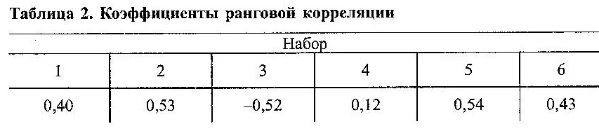
Более точно о
наличии прямой частотной мотивированности в наборе можно судить, если
частотную информативность фигуры сравнивать не с номером ее позиции,
а с экспертной оценкой условной игровой силы фигуры. В табл. 3 даны
такие оценки. Для корреляционного анализа использовалась сила фигур,
усредненная по всем оценкам (последний столбец табл. 3). Значения
коэффициентов корреляции силы фигур и частотных информативностей их
названий приведены в табл. 4.
Табл.3.
Условная сила шахматных фигур по различным источникам.
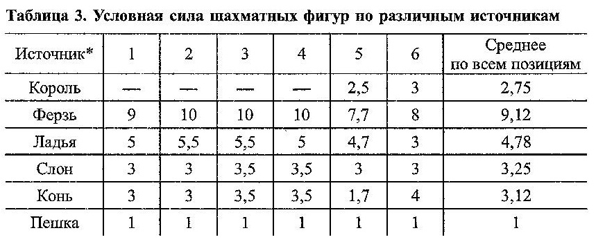
* 1, 2, 3
– оценки силы принятые в шахматных учебниках, 4 – оценка
для шахматной программы «Каисса», 5 – оценка по
книге: Е. Я. Гик. Математика на шахматной доске. М., Наука,
1983, 6 – оценка В. А. Трубицына по
22-ой партии матч-реванша Каспаров-Карпов в 1986 г.
По данным табл. 4
можно заключить об отсутствии прямого звукосмыслового соответствия
названий фигур и их силы во всех наборах, кроме польского (4), в
котором проявляется слабая тенденция к связи сходства. Еще более
слабая связь сходства прослеживается в современном русском наборе
(6). Русский разговорный набор (5) характеризуется более выраженной
связью отличия, что, впрочем, придает ему мотивированность, пусть
обратную, и выделяет на фоне других наборов. Подобная же связь
отличия, но менее сильная, существует у персидского набора (1).
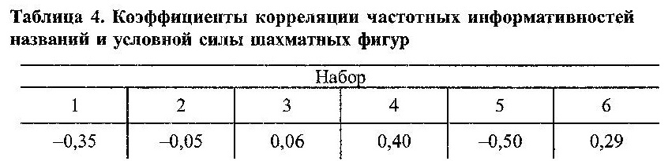
Сравнение
разговорного (5) и современного (6) русских наборов позволяет сделать
вывод о проявлении официальной лексикой тенденции к фиксации
звукосмысловых соответствий, что может доходить вплоть до
игнорирования языковой нормы. В разговорной речи, напротив, основным
является стремление речевой практики к приведению звуковых форм слов
в соответствие с нормой, безотносительно к адекватности фиксации
звукосмысловых соответствий.
В плане
звукосмысловых соответствий как древнерусская реконструкция (2), так
и русский средневековый набор (3) занимают промежуточное положение
между разговорным (5) и современным (6) русскими наборами.
Взаимная
корреляция названий
Для
поиска соответствия звуковых форм разных наборов вычислены
коэффициенты корреляции частотных информативностей названий шахматных
фигур. Результаты приведены в табл. 5, в которой затемнены позиции со
средней и высокой корреляцией сходства. Для удобства анализа на рис.
1 построена диаграмма взаимных связей наборов.
Табл.
5. Коэффициенты взаимной корреляции названий наборов.
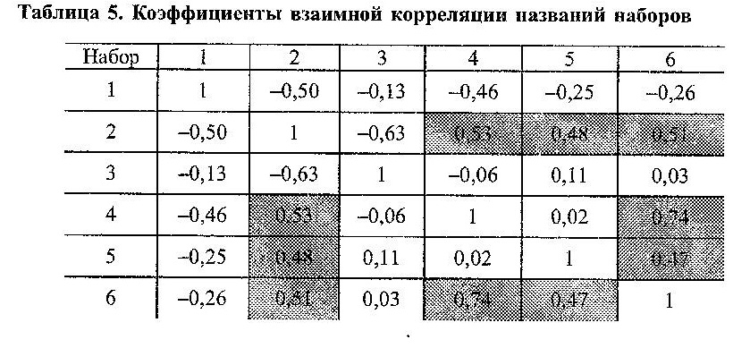
Достаточно высокое совпадение звуковых
свойств наборов (2), (5), (6) вовсе не удивительно, так как все они
сформированы в среде русского языка. Удивляет другое: - русский
средневековой набор названий (3) имеет значительное отличие от
древнерусской реконструкции (2) и не тяготеет ни к одному из других
наборов. Несмотря на то, что характеристики средневекового набора (3)
в целом не выходят за границы нормы, его средняя частотная
информативность завышена по отношению к реконструкции (2), а
индивидуальная частотная мотивированность меньше. Последняя
оказывается меньше также при сравнении с русским разговорным набором
(5). В этом, вероятно, следует искать фоносемантическую причину, по
которой речевая практика вытеснила используемые им названия и
трансформировала их в современные.
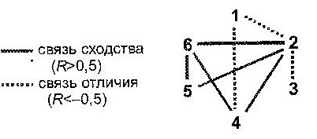
Рис. 1. Диаграмма связей
сходства и отличия
шахматных
наборов.
Наибольшее
сходство современный набор названий (6) проявляет по отношению к
польскому набору (4), разговорный набор названий (5) не имеет такой
связи. Сходство звуковых форм современного и польского наборов, вряд
ли объясняет только общность славянских корней языков. Скорее всего,
обнаруженная связь опосредована историей распространения шахмат в
Европе, когда заимствовались не только комплекты шахмат с правилами
игры, но и собственно названия фигур, включая их звуковые отличия и
выразительность.
По
результатам корреляционного анализа есть основания полагать, что
древнерусские названия по своим звуковым
формам родственны польским. Последние могли
повлиять на формирование разговорных и современных названий, причем
на современные, опять же, мог оказать воздействие польский набор
названий, что соответствует результатам выполненного в первой части
брошюры исторического анализа. В исторических фонетических формах
русских шахматных названий, вероятно, допустимо усматривать и
западный путь их первоначального проникновения на Русь.
Фоносемантический
генезис русских названий
Определение
основных характеристик исторических наборов русских названий
шахматных фигур позволяет на их примере проследить фоносемантическую
тенденцию в русском языке. Данные сведены в табл. 6.
Утвердившийся в нормативной языковой среде
современный набор названий (6) обладает средней частотной
информативностью f,
превосходящей языковую
норму, но укладывающейся в область нормальной дисперсии. Параллельно
существующий разговорный набор (5), как и древнерусская реконструкция
(2), ближе всего примыкают к норме. Средневековый набор (3) имеет
наибольшее значение f,
примыкающее к границе области нормальной дисперсии.
Вместе с тем, именно современный набор (6)
характеризуется наименьшей индивидуальной мотивированностью названий
М, сосуществующей с
проявляемой им наибольшей звукосмысловой согласованностью набора
названий, то есть связью названий фигур с их условной силой,
выражаемой коэффициентом корреляции R.
Отсюда следует, что именно звукосмысловые
соответствия являются важным фактором для
оптимального существования набора в лексической среде.
Происшедший за последние столетия качественный скачок шахмат из
простого развлечения в область искусства, притягивающего
интеллектуально развитых людей, не мог не наложить дополнительные
требования на соответствия содержания и формы используемых в игре
названий, на что тут же отреагировал русский язык - произошло
движение в сторону увеличения звукосмысловых соответствий в названиях
фигур.
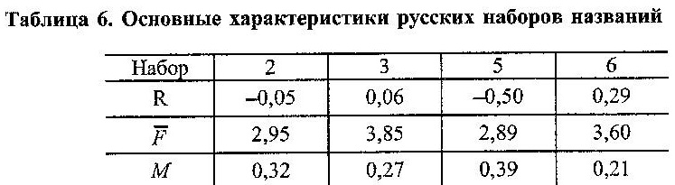
Разговорный набор (5) ближе к норме по
f, что,
по-видимому, определяет его не менее успешное функционирование в
среде непрофессиональных любителей шахмат, как альтернативы
официальному набору. Для последних шахматы переведены в разряд
заурядных развлекательных игр типа лото, карт, кеглей или городков, в
которых основным фактором, воспринимаемым участниками игр, должна
являться «понятность» названий, выражаемая их близостью к
норме. В этом смысле из-за слишком высокой f
средневековый набор проигрывает всем
остальным, что с очевидностью повлияло на его
модификацию: названия некоторых фигур оказались измененными, именно
новые варианты названий закрепила речевая практика.
Из
рассмотренной шахматной лексики следует, что язык приближает
лексико-семантические группы слов к частотной норме двойственным
образом. Во-первых, путем введения звуковых форм, в которых более
явно присутствует элемент звукосмысловых соответствий. Примером тому
историческая трансформация слабо мотивированных древнерусской
реконструкции и средневекового набора названий. Во-вторых, путем
приближения средней частотной информативности лексико-семантической
группы слов к норме. Результатом совместного действия указанных
языковых механизмов является некоторый компромиссный, возможно, не
оптимальный вариант, отвечающий интуитивным потребностям носителей
языка в их речевой практике.
Заключение
Несмотря на многоплановость лексических
значений слов, используемых в качестве названий шахматных фигур, по
результатам проведенного исторического и фоносемантического анализа
(в последнем случае в аспекте реализации нормы современного языка)
достаточно привлекательными выглядят древнерусская
реконструкция и
разговорный набор,
которые, по большей части, используют исторически мотивированные и
семантически обоснованные названия.
Таблица
7. Типология древнерусских шахмат. И. Линдер (по материалам
археологических раскопок). 1975 г.
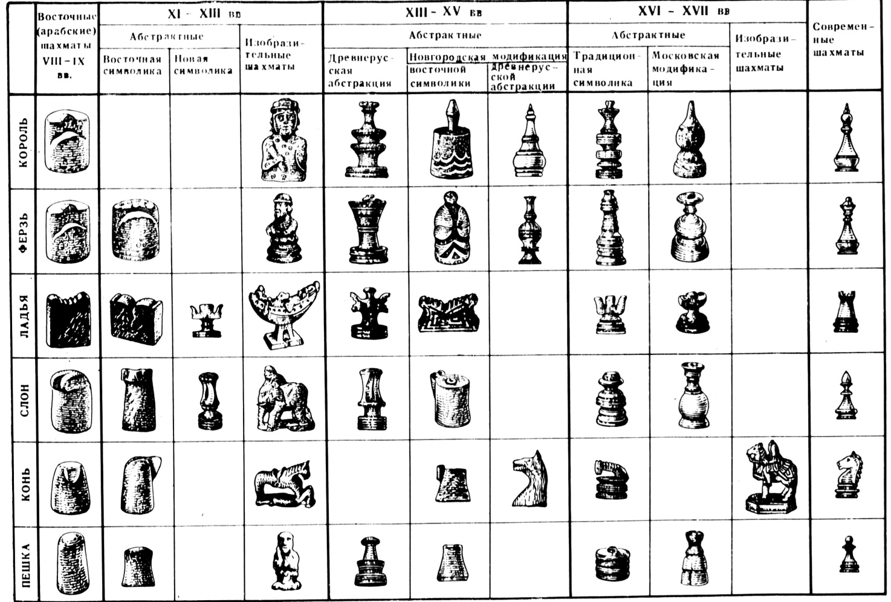
Реконструкция не задумывалась авторами как
оппозиция к устоявшемуся в спортивной шахматной среде современному
набору названий фигур, который сам по себе достаточно органичен. Речь
не идет о каких-либо отменах и переименованиях. В жизни за последнее
десятилетие их было достаточно. Нам представляется, что по
результатам настоящего исследования найдены причины и мотивы
превращений, которые порой представляются необоснованными. Редкие
исследователи обращались к последовательному анализу. Возможно,
авторам удалось внести элемент ясности в стихийный генезис русских
названий шахматных фигур.
Реконструкция может быть рекомендована к
альтернативному использованию для обозначения и нотации шахматных
фигур, например, в новых шахматных играх, так как, по мнению авторов,
реконструкция превосходит современный набор по сопряжению с языковой
нормой.
Обнаруженные
историко-лингвистические соответствия говорят в пользу единого
исторического источника появления шахмат на Руси и в Польше:
отсутствие звуковых связей русских и польского наборов
шахматных названий с персидским можно трактовать как одновременное
первоначальное проникновение шахмат в Россию и Польшу.
Следует особо
подчеркнуть, что с целью упрощения многочисленных ссылок в названиях
шахматных фигур разных исторических эпох И. Линдер подписывал
репродукции с археологических находок современными русскими
шахматными терминами (король, ферзь, ладья, слон, конь, пешка), но
это не должно нас вводить в заблуждение. Например, в иллюстрации
фигур из Афрасиаба (6-8 века) в принципе не могло быть даже похожих
названий. Ведь мы зрительно видим там совершенно другой тип фигур:
раджа, фарзин, ратха, пил, асп, пийадэ. Обозревая превосходно
выполненную И. Линдером таблицу "Типология древнерусских шахмат
по материалам археологических открытий", читатель, к сожалению,
уже по инерции мало задумывается о подлинных исторических названиях
фигур, относящихся к разным эпохам и регионам. Как и о том, что,
например, изобразительные шахматы 11-13 веков, помещенные в 4-ом
столбце указанной таблицы, вовсе не относятся к одному и тому же
шахматному набору, а собраны из разных археологических раскопок.
Часть изображенных там фигур могла иметь и другие названия, против
чего не возражает и сам И. Линдер. Фигура короля, найденная в Бресте
на нынешней границе с Польшей, вполне могла носить именно такое
название - но только там, где ее нашли! Для остальных гигантских
просторов России это вовсе не было обязательным фактом. Такая же
фигурка в Киеве могла называться "цьсарь" (по
византийско-болгарской традиции), а в другом месте - "кънязь",
так как ни о каком едином королевском или царском титуле в эпоху
древней Руси от Бреста до Волги не могло быть и речи. Что касается
второй изображенной там фигуры (ферзь из Лукомля), то здесь мы
наблюдаем обратный словообразовательный процесс по линии
восток-запад. Давление именно этого восточного термина было очень
велико, но ведь процесс его осмысления шел непрерывно не одну сотню
лет! Запад сразу же отказался от этого термина после его
проникновения в Испанию. Где проходила такая граница отказа на
территории СНГ, пока не известно: восточные нашествия шли волнами
одно за другим вплоть до 15 века. Во всяком случае этот
гипотетический ферзь из Белоруссии очень смахивает не на восточного
фарзина, а на славянского воеводу. Во всяком случае "археологические
раскопки" в сфере языка могли бы пролить свет на эти загадки -
и одним из методов такого проникновения в неизвестность является
настоящая работа, главным результатом которой, на наш взгляд, явилась
попытка "реликтовой" реконструкции древнерусских названий
шахматных фигур, по многим параметрам совпавшая с традиционными
фоносемантическими нормами современного русского языка. Вместе с тем
показан изолированный характер действительно существовавшего
стихийного средневекового набора названий фигур, который лишь спустя
несколько столетий трансформировался в более приемлемую звуковую
форму - но так и остался лексически ущербным.
Исследователям
еще предстоит выяснить, как именно шел процесс эволюции названий
шахматных фигур от Бреста до Белой Вежи и Мангазеи. Второй важнейший
аспект проблемы состоит в том, что не всегда стоит восхищаться
стихией языка: словообразовательным процессом можно и нужно
управлять, чтобы избежать семантических парадоксов, утяжеляющих
структуру языка.
Примечание: Тут
возникла диллема: остановиться на этом – или всё же дать
читателю возможность перейти от популярного стиля изложения к
научному. Что сделать не всегда просто. В этом и состоит трудность
подобных публикаций. Кто-то видит высокую поэзию в постулатах Эвклида
или формуле Эйнштейна – а другому невдомёк, что нет особой
границы между точными и гуманитарными науками. Вот и в нашем случае
преподаватель физики и практик-технарь вторгаются в сферу весьма
нетривиальных аспектов лингвистики. Да ещё и в ситуации
переформатирования математического аппарата на язык интернета. Но
попробуем…
Вольно или невольно мы
оказались в гуще проблем языкознания. Что не должно остаться
незамеченным и лингвистами, и писателями, пытающимся проникнуть в
глубинные тайны слова.
Между прочим, статья
В.Трубицына о возможной гармонизации русского алфавита,
представленная на Фишке.ру в раделе ЖЖ, всё ещё висит на сайте
gramma.ru.
Приложение
О
фоносемантике
Фоносемантика представляет собой
сравнительно молодую науку, в законченном виде сформировавшуюся
несколько десятилетий назад и выросшую из обобщения результатов
разнообразных исследований аспекта звукоизобразительности
в языке. Такие языковедческие науки, как
фонетика и семантика, исходя из принципа произвольности языкового
знака, оказались не в состоянии объяснить возросшее количество
накопленных лингвистикой фактов о семантичности звука. Многочисленные
исследования ономатопеи (звукоподражания) и звукосимволизма, включая
психолингвистические измерения, безусловно подвели к выводу о
существовании изначальной связи между звуковыми оболочками слов и их
значениями в различных языках, включая русский. Тем самым нашла
окончательное подтверждение давно существовавшая в лингвистике идея о
содержательности звуковых форм,
которые проявляют тенденцию в той или иной мере соответствовать
смыслу слов.
Уже
в Древней Индии существовала уверенность в исконной связи названия и
обозначаемого. Квинтэссенцию последнего искали в фонетическом составе
слова. В Древней Греции длительное время продолжалась философская
полемика относительно «имён», то есть названий, вещей,
отголоски которой докатились до наших дней, поскольку затронутый
вопрос имеет прямое отношение к проблеме звуковой изобразительности.
Споры велись между приверженцами концепции «тесей»,
утверждавшими, что звуки слова участвуют в номинации произвольно и не
связаны со свойствами обозначаемой вещи, и приверженцами концепции
«фюсей»,
которые защищали отприродный аспект названий, основываясь на
представлении о существовании жесткой связи между звучанием и
значением слова. Активно вовлеченным в обсуждение оказался Платон,
который отстаивал тезис о слове, как отображении вещи, совсем не
тождественном ей самой, но вмещающем в себя некоторые ее особенности.
На
протяжении веков дискуссия возникала снова и снова, привлекая великие
умы: проблема звукосмысловых соответствий интересовала Руссо,
Декарта, Ломоносова, Гумбольдта
и других. Российские поэты-символисты Бальмонт
и Белый пытались проникнуть в первоначальную
звуковую семантику слов, чтобы использовать полученные знания в своем
творчестве. Вместе с тем, отсутствие строгих лингвистических методик
порой приводило исследователей к противоречивым результатам, к
абсолютизации полученных на ограниченном материале выводов, которые,
в первую очередь, касались вопросов звукоподражания в языке. Позже
круг лингвистических исследований звукоизобразительности стал
существенно шире, они затрагивали поэтику, детскую речь, психологию
восприятия.
В настоящее время
изучением звукосмысловых соответствий, как в узком, так и в широком
понимании, занимается фоносемантика, системное и полное
изложение теоретических и методологических аспектов которой впервые
выполнено С. В. Ворониным (см. 7). Целью фоносемантики
является изучение звукоизобразительности языка как
необходимой, существенной, повторяющейся и относительно устойчивой
непроизвольно фонетически (примарно) мотивированной связи между
фонемами слова и полагаемым в основу номинации признаком
объекта-денотата. В узком понимании звукоизобразительностью наделены
те слова, которые воспринимаются фонетически мотивированными
современными носителями языка, в широком понимании – слова,
примарно мотивированные по своему происхождению, но в которых
звукосмысловые соответствия ослаблены или полностью утрачены в ходе
эволюции языка.
Место фоносемантики в лингвистике находится
на стыке фонетики, семантики и лексикологии, а в психологии примыкает
к психологии восприятия. Вместе с тем, фоносемантика является
самостоятельной наукой в силу уникальности объекта исследования, не
подпадающего под компетенцию ни одной из отдельно взятых
перечисленных выше наук. К ее основным принципам, согласно С. В.
Воронину, относят принцип мотивированности
языкового знака (слова), принцип отражения, принцип детерминизма,
принцип системности, принцип целостности, принцип многоплановости.
Остановимся на них подробнее.
Принцип
мотивированности языкового знака.
Этот принцип является основным в
фоносемантике. Он противостоит концепции произвольности (случайного
характера) номинации, допускающей независимость означающего от
свойств обозначаемого объекта-денотата. С общефилософской позиции
принцип мотивированности отражает целостность системы мира, в которой
существует глубокая и всеобъемлющая взаимосвязь объектов
действительности.
Однако из основополагающего принципа
фоносемантики вовсе не следует, что все слова языка можно расценивать
как мотивированные. Дело в том, что языковой знак обладает двумя
сущностными аспектами: он одновременно произволен и мотивирован, так
как само слово, в которое он включен, функционирует и в качестве
средства отражения действительности, и в качестве средства обмена
информацией между людьми. Последнее, являясь основной функцией языка,
предполагает использование конвенционального подхода к
словообразованию, при котором введение новых слов в речевую практику
происходит на основе «договора» между ее участниками. Это
никак не связано с процессом примарной номинации, в котором один из
признаков денотата опосредованно закладывают в основу звуковой формы
слова. Следует полагать, что выбор конкретного признака происходит
случайно, то есть в достаточной мере произвольно, что вносит элемент
изначальной произвольности в акт примарной номинации, делая слова
двоякими в своей сущности. Оба указанных процесса в словообразовании
подводят к выводу о реализации звукосмысловых соответствий в языке
как тенденции к мотивированности, которая не обязательно должна
носить ярко выраженный характер, с очевидностью осознаваемый всеми
участниками речевой практики.
Принцип
отражения.
Классифицирует языковой знак, слово -
категорией отражения, утверждаемой материалистической гносеологией. В
языке содержанием отражения является значение слова (включая его
смысл) как сущность однородная с отображаемым понятием, а формой
отражения служит фонетическая оболочка, выступающая в роли внешнего
по отношению к слову выразителя его сущности. Отражение в языке
неизбежно содержит искажения свойств объекта в номинации. Более того,
при эволюции языка примарная мотивированность многих слов может
оказаться в значительной мере разрушенной.
Слово и сам язык первоначально возникли как
примарно мотивированные. Развиваясь в этом качестве, на определенном
этапе развития они исчерпывают потенциал звукоизобразительности, что
порождает процесс денатурализации, сопровождаемый ослаблением
примарной мотивированности. На передний план словообразования выходят
секундарные, то есть вторичные по отношению к естественной,
семантический и морфологический аспекты мотивированности. Слово,
первоначально возникшее в процессе отражения, речевая практика
адаптирует и приспосабливает для выполнения его основной функции –
функции коммуникативной. Отражательный характер изначального слова
становится безразличен его новой роли, слово приобретает черты
произвольности, вместе с тем в завуалированном виде сохраняя свою
звукоизобразительность, выделить которую в значении слова
представляет непростую задачу для исследователя.
Принцип
детерминизма.
Является манифестацией существования связи
между звуковой формой примарно мотивированного слова, отражающей
определенное свойство объекта-денотата, и его значением. Другими
словами, принцип материалистического детерминизма распространён на
звукосмысловые соответствия языка,
звукоизобразительного по своей природе, что подводит общефилософскую
основу и утверждает объективное существование предмета фоносемантики,
ставя фоносемантические рассмотрения над рамками чистого отрицания,
апеллирующего к элементам произвольности языкового знака и придающего
им абсолютный характер.
Принцип
системности.
Применение системного подхода предполагает
объективное рассмотрение явлений звукоизобразительности в
совокупности всего многообразия существующих внутри языка связей, что
гарантирует исключение субъективных предположений и догадок.
Принцип
целостности.
Дополняет принцип системности, исходя из
того, что свойства системы как целого не сводятся к простой сумме
свойств её элементов. Специфические связи между элементами всей
языковой системы не могут не влиять на свойства
звукоизобразительности, рассматриваемой как структурированная
подсистема языка.
Принцип
многоплановости.
Предполагает проведение законченного
фоносемантического описания как минимум на трех уровнях:
синтагматическом
(отдельные звуки, группы звуков или их сочетаний, звуковые формы
слов), парадигматическом
(звуковые формы групп или сочетаний слов, предложений), иерархическом
(вся многоуровневая система языка), а также рассмотрение
взаимодействия звукоизобразительной подсистемы с системой языка в
целом. Принцип многоплановости исходит из того, что любой текст, в
том числе в фонетическом представлении, являет собой
структурированную систему многоуровневого наполнения.
В
фоносемантических исследованиях обозначились два основных
направления, а именно, типологическое и психолингвистическое.
В рамках первого направления проводится сопоставительный анализ
проявлений звукоизобразительности в различных языках, исследуются
общие свойства фонем и фонемотипов для определения универсальных
способов передачи ими звукосмысловых соответствий. Психолингвистика
очевидно занимается экспериментальным изучением проявлений
звукосимволизма. Выбор названия этого направления обусловлен тем, что
оно затрагивает психологию восприятия языковых форм носителями языка.
В звукобуквенной модели, используемой психолингвистикой, (звукобуква
представляет собой стойкое обобщение, или образ, комплекса
признаков буквы и фонемы, присутствующий в сознании носителя языка)
достаточно подробно освещены как синтагматическая, так и
парадигматическая стороны звукового символизма русского языка.
Психолингвистическое направление фоносемантических исследований
сформулировано в работах А. П. Журавлева, заложившего
экспериментальные основы изучения проявлений звукосимволизма в
русском языке (см. 10). Разработанный звукобуквенный подход
позднее был распространен на выявление звукосимволизма в других
языках: немецком (см. 20), польском (см. 11), английском (см. 13).
По результатам
проведенных исследований можно сделать заключение о неодинаковой
степени проявления звукосимволизма в различных языках, более того на
примере английского языка обнаружены отличия в его восприятии
различными группами носителей языка, а именно, британцами и
американцами. Наличие рассогласования между графическим и
акустическим образами фонем в английском языке приводит к отсутствию
однозначного соответствия между словом написанным и словом
произнесенным, что не позволяет англо-говорящим сформировать в
сознании комплекс признаков, сопутствующих звукобукве. В отличие от
английского, русский язык имеет тенденцию поддерживать устойчивую
буквенно-фонемную связь написанного и прочитанного, утверждая в
сознании носителей языка их почти полное соответствие, что
обосновывает адекватность использования звукобуквенной модели при
исследовании явлений звукосимволизма.
Основой
психолингвистики, как и фоносемантики в целом, является тезис о
примарной мотивированности языкового знака, который предполагает
наличие соответствия между значением слова и его фонетической формой.
В звукобуквенной модели ассоциации, вызванные отдельными
звукобуквами, их звуковой символикой, в конечном итоге переносятся на
слово, их содержащее. Иными словами, звукосимволизм восходит к
фонетической структуре, проявляя себя как некий образ,
вызываемый у носителя языка всей уникальной звуковой формой
конкретного слова, присущей ему одному.
Лексическое
значение слова можно представить в виде наложения и
взаимопроникновения нескольких его аспектов: понятийного ядра
(смысла), признаковой оболочки и оболочки фоносемантической. В таком
представлении ближе всего к ядру расположена признаковая область, как
это показано на рис. 1. Конкретные звукосимволические признаки,
заполняющие фоносемантическую оболочку, по существу составляют
фонетическое (фоносемантическое) значение слова. Результаты
настоящего исследования, изложенные ниже, показывают наличие у слов
также непризнакового частотного фоносемантического аспекта, а именно
универсальной характеристики структурной неординарности звуковой
формы, на которую нанизываются аспекты конкретного признакового
звукосимволизма. Можно обоснованно утверждать, что фоносемантическая
оболочка имеет двойное наполнение: как частотное, которое
распространяется на все лексическое значение, так и признаковое,
которое обозначено на общей частотной составляющей определенными
мотивированными звукосимволическими признаками, в большинстве случаев
соответствующими конкретному понятийному ядру.
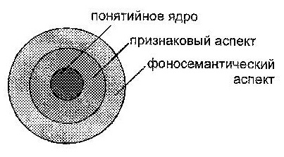
Рис. 1.
Схема лексического значения слова.
Заполняя всю
фоносемантическую оболочку, частотная составляющая формирует
периферийную по отношению к ядру часть лексического значения, как бы
обволакивая его частотным аспектом. Наличие этого частотного аспекта
дает основания единообразно характеризовать и сопоставлять свойства
звуковых форм различных слов, не обращаясь напрямую к признаковой
наполненности их лексических значений, так как частотная составляющая
несет в себе обобщенную надпризнаковую фоносемантическую
характеристику звукового образа слова. Это, впрочем, не исключает
наличия самых общих связей семантики слова и его звучания в частотном
срезе.
Фонетическое
значение не может быть сознательно истолковано отдельным носителем
языка. Поэтому его выявление доступно либо, как это проделано в
исследовании А. П. Журавлева, с помощью целенаправленной
регистрации реакций на звуковую форму, проявляемых многими
носителями языка, либо путем статистических обобщений языковых
явлений, связанных с фонетическим значением, что является
основным методом типологических изысканий, а также использовано в
настоящем исследовании.
Наибольшей
психологической реальностью на фонетическом уровне восприятия
обладает звукобуквенный образ, который возникает из
звуков речи, но осознается и закрепляется при помощи соответствующей
буквы. Материальным представлением звукобуквы могут рассматриваться
либо звук, либо буква, но неизбежные неточности такого
модельного описания будут присутствовать и в том, и в другом случаях.
Поскольку для грамотного человека, умеющего читать и писать, звук и
буква неразрывно связаны, звукобуквенная модель вполне адекватно
учитывает эту особенность организации языкового сознания. Более того,
к настоящему времени она получила подтверждение по всей совокупности
выполненных исследований.
Звукобуквенная
модель использует деление согласных на мягкие и твердые, соотнося с
ними разные звукобуквенные комплексы. Признак твердости-мягкости
присутствует в речи у звукобукв «б», «в»,
«г», «д», «з», «к»,
«л», «м», «н», «п»,
«р», «с», «т», «ф»,
«х». Перечисленные согласные «смягчаются»,
если после них в слове стоят «и», «е», «ё»,
«ю», «я», «ь», во всех остальных
случаях они остаются твердыми. Другие согласные, как и гласные, не
меняют своего звучания в слове, всегда передаваясь одними и теми
же звукобуквенными комплексами. Мягкую согласную в звукобуквенной
записи обозначают буквой с апострофом за ней, а твердую –
обычным образом. Всего в русском языке насчитывается 46 звукобукв.
Для гласных в звукобуквенной модели дополнительно учитывают ударение,
придающее ударным повышенную фонетическую значимость в слове. По этой
же причине отдельно рассматривают первые звукобуквы слов.
Поскольку
звукосимволизм текста выводится из звукосимволизма составляющих его
звукобукв, это с неизбежностью требует количественного измерения
фоносемантических значимостей звукобукв. В работах А. П. Журавлева
подобные измерения были выполнены путем опроса информантов по 25
полярным признаковым шкалам, образованным парами антонимичных
прилагательных, например, «хороший» - «плохой»,
«радостный» - «печальный» и т.д. Каждая шкала
была градуирована на пять делений числами от 1 до 5, чтобы крайние
деления 1 и 5 обозначали максимальное проявление одного из признаков,
следующие 2 и 4 – начальную степень проявления, а центральное
деление 3 характеризовало отсутствие обоих полярных признаков у
звукобуквы. В результате опроса был получен набор оценок для 46
звукобукв русского языка. Все оценки подвергнуты статистической
обработке для установления средней фоносемантической значимости
отдельной звукобуквы. Определение области значимых оценок было
выполнено исходя из дисперсий распределений количественных ответов
опрошенных информантов.
Корреляционный
анализ экспериментальных результатов по всем использованным шкалам
позволил установить их группировку вокруг признаков оценки,
мягкости/силы и активности, построить модель фоносемантического
пространства восприятия звуков русского языка, а также
сформировать оптимальный набор из 7 шкал, достаточный для надежного
измерения символизма звукобукв. Исходя из символизма наиболее
частотных в конкретном тексте звукобукв, на примерах поэтических
произведений проанализированы аспекты функционирования
звукосимволизма, например звуко-цветового.
Наибольший
интерес в работах А. П. Журавлева представляет
экспериментальное определение фонетических значений
(фоносемантической значимости) непроизводных слов русского языка.
Остановимся на этом вопросе подробнее.
Если
отдельные фонемы слова наделены в восприятии символизмом, то им
наделены и их сочетания, в том числе слова. Однако неравноценность
расположения звукобукв в слове придает первым и ударным особый
психологический вес, который был учтен в построенной звукобуквенной
модели. В основу модели определения фонетического значения слова
положены частотности его звукобукв, то есть усредненные частоты
повторяемости их в речевом тексте, которые интуитивно правильно
представляют носители языка. Частотность отдельной звукобуквы
связана со значимостью ее образа: влияние малочастотных звукобукв
слова оказывается более сильным, а значит, они вносят больший вклад в
окончательную символику слова. В рассматриваемом исследовании средние
частотности находили по стилистически нейтральному тексту, в качестве
которого выбрана обиходная речь. Особо отмечено, что даже
стилизованная разговорная речь героев литературных произведений не
может быть использована для вычисления средних частотностей, так как
является статистически непредставительной и дает неустойчивые в плане
надежности результаты.
Основной
сложностью в проведении измерений фоносемантической значимости слов,
существующих в речевой практике, являлась невозможность применения
методики шкалирования - носители языка не осознают звуковую символику
слова на фоне его чётко выраженного лексического значения, которое
подавляет слабо обозначенный фоносемантический аспект.
А. П. Журавлеву удалось избежать этого естественного
«затенения» символики посредством конструирования
«квазислов», специально составленных
звукобуквенных образований (звукокомплексов), ввиду отсутствия их в
речевой практике не наделенных смыслом, но в полной мере обладающих
фоносемантической значимостью. Измеренные значимости квазислов
принимались за эталон, с которым сопоставлялись результаты
теоретической звукобуквенной модели, использованной для расчета той
же значимости, но на основе символики входящих в квазислово
звукобукв.
Апробированная на
адекватность звукобуквенная модель для вычисления признаковой
фоносемантической значимости F слова
имела вид:
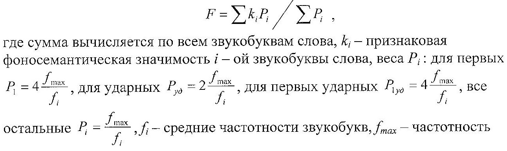
наиболее
частотной звукобуквы слова. Дополнительные психологические веса
первой, ударной и первой ударной в восприятии звуковой формы слова
учтены введением множителей 2 и 4. Для конкретных расчетов в модели
отдельно учитывались частотности ударных и безударных гласных, причем
частотности ударных использовались в том случае, когда гласная
оказывалась ударной.
Сравнение расчетных значимостей 20
квазислов с измеренными значениями показало их близость, что явилось
экспериментальным обоснованием построенной модели. Вместе с тем,
близость теоретических и экспериментальных результатов оценивалась
интуитивно, без применения каких бы то ни было вычислительных
критериев, вообще не рассматривалась задача оптимальной
параметризации модели (имеются в виду множители 2 и 4 - параметры
используемой модели). Объяснением тому служит ссылка автора на более
общую задачу фоносемантического характера – доказать
само существование звукосмысловых соответствий в русском языке,
что в полной мере оправдывает процедуру построения упрощенной модели.
Детальный анализ звукобуквенной модели,
проделанный при построении описанной ниже частотной модели,
показывает, что множители 2 и 4 перед обратными частотностями выбраны
в определенной мере произвольно. Более того, в модельном
представлении они приводят не к увеличению фоносемантических
значимостей соответствующих звукобукв, а к уменьшению их
частотностей, что хорошо видно из коэффициентов:
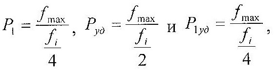
хотя
роль множителей 2 и 4 сводится исключительно к увеличению
символического образа звукобуквы в восприятии, а не к занижению её
объективно заданной частотности. Исключение отмеченного
несоответствия в частотной модели приводит к изменению знаменателя
модельного выражения, при этом все модельное выражение приобретает
смысл совместного статистического взвешивания фоносемантических
характеристик звукобукв слова на основе их психологических весов в
восприятии.
Указанный недостаток не уменьшает важности
работ А. П. Журавлева. Применение звукобуквенной модели к
большому фактическому материалу из непроизводных существительных
русского языка продемонстрировало тенденцию к
соответствию звучания и значения, заложенную в языке.
В различных словах эта тенденция реализуется с разной степенью
очевидности, варьируясь от четкого соответствия фонетического и
лексического значений до явных противоречий. В этом проявляется
диалектика сосуществования формы и содержания языкового знака,
влияющая на способ его функционирования в речевой практике. Гармония
содержания и формы повышает эффективность функционирования, а
внутренние противоречия вызывают процесс секундарной номинации или
изменения формы в сторону соответствия.
Даже из
приведенного выше краткого обзора, в основном психолингвистического
направления, можно сделать вывод о неоспоримых достижениях
фоносемантической науки. Несмотря на молодость, фоносемантика
наметила конкретные пути и способы исследований русского языка во
всем его многообразии. Появление новых идей и методик позволяет
глубже проникнуть в удивительную гармонию родного языка, понять
принципы организации его выразительных средств, уточнить
представления о его природе и происхождении.
Конец 2-ой
части.
|
|
- Персоналии
- История знаковых игр
- Наша игротека
- Головоломки, лингвистические игры
- Теория
- Прикладные аспекты
- Наши рецензии
- Журнал в журнале
- Другие статьи
|